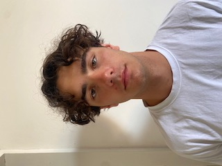

J'ai 20 ans et je suis étudiant en Bachelor in Management à Audencia à Nantes.
Je suis actuellement à la recherche d’un emploi saisonnier pour juillet et août 2026.
Voir mon LinkedInSee Events Bali (2025) : Marketing et développement commercial
Happy Rental Bike, Barcelone (2025) : Accueil clients internationaux, gestion des contrats et stocks
Adidas, Nantes (2024) : Vente, conseil client, gestion des stocks
Camping Capfun (2023) : Entretien et préparation des logements
Colbert Assurances (2023) : Tri et saisie de dossiers
Français : langue maternelle
Anglais : niveau C1
Espagnol : niveau B2
Maîtrise du Pack Office et certification PIX
Sport : rugby, football, tennis
Musique, cinéma, littérature
Actualités et politique
Bénévolat à la Banque Alimentaire depuis 2018
Joueur de rugby en sénior, entraîneur et arbitre
Membre du pôle événementiel du BDE Audencia